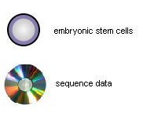
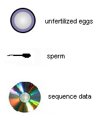

Frequently Asked Questions:
1. What do we mean by "non-biological"?
A non-biological AI would be made out of non-biological materials like silicon computer chips or quantum computers. Alternatively, it could be possible to create Artificial Intelligence by connecting together living neurons in a vat. This question pertains only to AIs created by programming non-biological computers.
2. What is human-level Artificial Intelligence?
By human-level AI, we mean AI that is broadly human-equivalent in its capabilities, possessing the ability to achieve complex goals in complex environments, model, communicate and collaborate with other minds, take initiative, be creative, make plans, store and retrieve memories, and bring its experience to bear on a problem.
Human-level AI would not necessarily match or exceed human capabilities in every domain. That is why we say "human-level" instead of "human-equivalent". In particular, a human-level AI need not be subjectively conscious, have a sense of humor, possess social common sense, the ability to love, or any other stereotypically human traits. We are interested here only in the ability of the AI to solve problems, take initiative, and achieve real world goals at a human level of competency.
A human-level may have a different balance of domain competencies than a human does. For instance, it may be adept at problems that require brute force computation, or pattern matching against millions of possible data sets, but worse when it comes to whimsy or personal charisma. Even the reverse may be possible – we don't know.
You may think there is a chance that human-level AI is impossible; if so, please give your probability estimate in the first question. Just keep in mind that an AI need not possess stereotypically human qualities to qualify as human-level, just display human-level general intelligence.
3. What is neuromorphic AI?
Throughout this website, the phrase "neuromorphic AI" refers to Artificial Intelligence created by creating a software model of the human brain in sufficient detail for general intelligence to be duplicated. The key concept is that the programmers wouldn't need to understand how the program worked in all its detail – they would simply copy features of human neurobiology and simulate them in a computer.
We don't know what level of detail will be necessary to create a neuromorphic AI, or whether creating a human-level AI using this approach is even possible at all. It may be necessary to simulate every neuron and synapse using a computer a billion times faster than the fastest supercomputer available today. It may be possible to get human-level AI using present-day hardware, like the Deep Blue architecture being used for the Blue Brain simulation project. The output of this model will be determined by your answers to these questions, which you'll give in part 1-3 and 1-5.
For the purposes of this model, just assume that "neuromorphic AI" refers to granularity of simulation that you believe is most plausible.
4. What is Moore's Law?
Moore's law is a historical pattern in the development of computer chips observed by Intel co-founder Gordon Moore in 1965. It states that the number of transistors that can be inexpensively placed on an integrated circuit doubles approximately every two years. This trend has been maintained from 1965 through 2007, and most observers expect it to continue through 2015 at least.
5. What is non-neuromorphic AI?
Non-neuromorphic AI is any human-level AI designed without copying the architecture of the brain. Non-neuromorphic AI would be designed using a theory of intelligence as its guiding force, rather than neurological data. Although there are grey areas between non-neuromorphic and neuromorphic, in practice, AI programmers tend to put their confidence in one approach or the other. This makes it likely that human-level AI, if and when it is created, is more likely to reflect one design philosophy or the other rather than both in equal parts.
6. What are some major risks to human civilization over the next 60 years?
In recent years, some scientists and journalists have begun to argue there is a significant chance that our civilization or species might suffer a disaster so large that it is set back decades or centuries or even eliminated out entirely. Two eminent scientists that have made this argument are astrophysicist Stephen Hawking and President of the Royal Society Martin Rees. Hawking has stated:
"Life on Earth is at the ever-increased risk of being wiped out by a disaster, such as sudden global warming, nuclear war, a genetically engineered virus or other dangers we have not yet thought of. […] I don't think the human race will survive the next thousand years, unless we spread into space. There are too many accidents that can befall life on a single planet."
In MIT's Technology Review magazine, Mark Williams wrote:"There is a growing scientific consensus that biotechnology – especially, the technology to synthesize ever larger DNA sequences – has advanced to the point that terrorists and rogue states could engineer dangerous novel pathogens."
7. What is multi-generational in vitro embryo selection?
Multi-generational in vitro embryo selection, also known as iterated embryo selection (IES), refers to a not-yet-developed biotechnological technique that could be used to select human embryos for specific genotypes. IES, like the currently-existing practice of pre-implantation genetic diagnosis (PGD), would allow “designer babies”, and hence might be controversial in some countries. Still, if history is any guide, it seems likely to eventually be adopted, just like any other medical procedure that makes the patient healthier and less susceptible to disease or other malady.
Basically, IES is a low-tech path to relatively extreme genetic enhancement.
Here are the initial ingredients that go into IES:

The first step of the process begins with acquiring a number of embryonic stem cells from different donors, as many as hundreds and as few as four. Collectively, the stem cells must have the desired alleles (genetic variations) for the offspring embryo. For instance, if the goal of the process is an embryo that develops into a child with brown hair, green eyes, and the absence of a specific genetic disease, then all these features must be present in the ancestor embryos, though not necessarily all in the same embryo. Also, sequence data for all the stem cells is required, though not necessarily full sequences. All that is needed is sequence data for the genes which are to be selected for.
The embryonic stem cells could come from a variety of sources, including skin cells coaxed back into an embryonic state. With today's technology, embryos need not be destroyed to obtain embryonic stem cells. On August 23, 2006, Advanced Cell Technology in Worcester, MA announced that they had developed a method they could extract embryonic stem cells from an embryo without destroying it. In July 2007, it was announced that one of Japan's leading genetics researchers, Shinya Yamanaka, was able to genetically coax mouse skin cells into an embryonic state by manipulating just four genes. According to many stem cell experts, such procedures are likely to become routine for humans cells in the near future. The added benefit would be an availability of diverse genetic lines for stem cell therapies, which would minimize the likelihood of rejection.
The second step of the IES process is to coax the stem cells into differentiating into either sperm or eggs. Though this technology has not yet been developed, many experts in the field, such as the Hinxton Group, a group of independent experts, published a 2008 report that predicted the derivation of sperm and eggs from pluripotent stem cells between 2013 and 2018.
If the first step works, we now have three components:

Now that we have gametes (sperm and eggs), we can fertilize the eggs using in vitro (in glass) fertilization (IVF). In vitro fertilization has been performed regularly since it was introduced in 1978. That is the third step of the process. The genetic material in each of the gametes was selected semi-randomly during meiosis (the process by which the gametes were created), so the genetic recombination that takes place during fertilization results in a zygote (fertilized egg) made up of a semi-random fusion of the genetic material in the two gametes. This is exactly what occurs in conventional sexual reproduction, but in this case, it's all happening in a test tube.After the second step, we now have the following:

During the fifth step of the process, zygotes which possess as many of the desired alleles (genetic variants) as possible are selected, while others are discarded. (Because of the ethical thorniness of this step, those who object to the destruction of fertilized eggs would likely object to the whole procedure.) Then, the process returns to the second step, whereby the desired zygotes are coaxed into differentiating into sperm and eggs. This allows the zygote to contribute its genetic material to reproduction without the usual 16-18 year wait before it develops into a human being that reaches sexual maturity.
Next, the third step is repeated again. The eggs and sperm are intelligently and selectively combined in the process of fertilization, creating “grandchildren zygotes” of the original embryonic stem cells from the first step. By sequencing the relevant genes at each stage of the process, then combining the gametes together in an intelligently orchestrated way, embryos can be created with the desired alleles. How specific the genes can be made is a function of how many iterations are used. Thus the term iterated embryo selection.
This technology is a combination of three others: artificial gametes (not yet developed for humans), in vitro fertilization (invented 1978), and pre-implantation genetic diagnosis (invented 1990). Each of these offers its own ethical issues. Germany, for instance, prohibits PGD by law, even in cases where the baby is likely to be born with a crippling genetic disease. The Roman Catholic Church condemns most types of IVF, objecting to fertilization occurring outside the body. Most countries have laws regulating PGD, though it generally is permitted.
Some groups, such as the Center for Genetics and Society, decry embryo selection as a step towards "designer babies", a pejorative term for infants born from selected embryos. Others, such as the Institute for Ethics and Emerging Technologies, argue that once reprogenetic technology is shown to be safe, it is a responsible and justifiable application of parental procreative liberty. The use of embryo selection on one's children is said to be defensible as procreative beneficence, the moral obligation of parents to try to give their children the healthiest, happiest lives possible.
We can't say with certainty that iterated eombryo selection will be adopted widely. Current discussion of the principle of "healthy birth" in China, however, does strongly suggest that it will be in that country if not in others. Western bioethicists, after an earlier departure, have been moving in the direction of endorsing the principle of "procreative beneficence" as well.
8. What is wireheading?
"Wireheading" is a term from Larry Niven's Known Space stories. It originally referred to humans using electronic brain implants to stimulate the pleasure centers of their brain, but has since come to refer to any addictive pleasure center stimulation. Though an AI might have a radically different neural architecture than humans, it might still have a pleasure center, which could be susceptible to overstimulation. If a poorly programmed AI finds some way of stimulating its own pleasure center continuously, it might do that at the exclusion of all else. On this website, that is what we mean by the term wireheading.
9. Without frequency data or a formal model, does it even make sense to talk about "probabilities", like the "probability" that human-level AI is possible in principle, or the "probability" that Moore's Law will continue until 2020?We think so. You can refuse to state probabilities, and be blissfully free from criticism &mdash but refusing to have probabilities is much harder.
Imagine crossing a road. As you step off the curb, you look left and right, for approaching cars &mdash but you do not look up, for falling anvils. This strange behavior suggests you think approaching cars are somehow more probable than falling anvils. To make this judgment you didn't need past anvil counts, or a formal model of anvils &mdash all you needed was some common-sense insight into the nature of anvils, and of roads.
Future technologies like AI aren't fundamentally different. How much do you worry about AI risks? Are there any other risks that, in a world with AI, would stop mattering &mdash how much do you worry about those? Are there good outcomes that, in a world with AI, would happen anyway &mdash how much do you invest in them? All this depends on exactly how plausible AI seems to you.
So we're interpreting probabilities as betting odds. For some given benefit you get when you're right, how much of a cost are you willing to bear when you're wrong? According to "Dutch book" theorems, if your answers to such questions (after the right transformations) don't end up obeying probability theory, then in some circumstances you'll act in a way that's self-defeating.
So when we talk about probabilities, we're not talking about something that's out there, in the world. We're talking about something that's already part of how you choose between actions, and that's sometimes best made explicit.
10. But we don't know anything about these technologies &mdash they haven't even happened yet. Science tells us nothing. How am I to choose one probability and say it's somehow better than any other?
There are a lot of different kinds of unlikely. We don't have scientific data on whether humans will build colonies on Mars, but it's more likely than that humans will build colonies on Neptune, which is more likely than that badgers will build colonies on Neptune, which is in turn more likely than that badgers will build baseball stadiums on Neptune.
The very fact that we can make judgments like this means we must have information from somewhere. Without direct experimental evidence, we must rely on extrapolating trends, on imperfect analogies with the past, and on pure theory. We can't be too certain of anything. But we can do significantly better than "I don't know" , or "it either will or won't happen, therefore the probability is 50%".
11. What if I assign a probability of 5% and the real probability turns out to have been one in a million?
You'll probably be OK.
Being off by that big a factor sounds scary. But the surprise here isn't that serious. If you put a 5% chance on something, then about 19 out of 20 times, on learning enough, you expect your new and more informed estimate to be close to zero. You're not stating, falsely, that 5% is the estimate other people should have based on their information; you're just stating you personally aren't sure.
If you had assigned one in a million to something you'd later have to upgrade to a 5% chance, that would have been much scarier. If your "one in a million" really means one in a million, then that sort of thing almost never happens.
12. When people just make up probabilities, as users are asked to do in The Uncertain Future, are there any problems we can expect to arise? What can I do about them?
Yes, problems do arise. Mainly, people are overconfident. They tend to work from assumptions as if they were certainties, understating the error bounds around their best estimates. To fix this, just widen your distributions.
An effect called "anchoring" bends guesses toward whatever guess you saw recently, or even whatever random number you saw recently. So when making estimates, make an effort to ensure that they're your own estimates &mdash if you adjust from our defaults, you will probably adjust too little.
It's been found that averaging guesses you made at different times can improve their accuracy. So even just clearing your mind and retaking the questionnaire could help.
13. Why estimate AI time lines piece by piece, as The Uncertain Future does? Do you get better results this way than by just estimating the whole thing at once?
Having two ways to find the answer is better than having one. If your impression of the whole differs wildly from what you built out of your impressions of the individual pieces, at least one of these estimates is wrong.
Maybe your impression of the whole came from just badly aggregating the individual pieces. In that case, having our tool do the aggregating for you should improve the estimate.
But maybe your impression of the whole used information that your impressions of the pieces didn't; it may help to think about what that information could be. In that case it's not so obvious which estimate is better.
There's an additional plus to estimating things piece by piece: it allows you to isolate your disagreements with others. If all you can do is state differing impressions over and over again, the results tend to be unproductive. By breaking the whole down into pieces, you can identify individual concrete differences in your predictions, about which you can have useful discussion.
14. Should I make conservative estimates to hedge bets?
No &mdash you should state your best, most accurate estimate. Sometimes there's room for "erring on the side of caution", but this always refers to actions, not beliefs.
If, under one scenario, your choice matters more than under other scenarios, the solution isn't to believe that one scenario more, "just in case". The solution is to weight that scenario more heavily in your decision-making.
And if you want to understate one of the probabilities, because you're thinking of how someone who heard about it might exaggerate it to others, well, you could still put in your best estimates and at least see the honest result for yourself.
15. Why did most of your questions use a log-normal distribution?
The log-normal distribution behaves qualitively more or less like we want it to: there's a single central hump of probability mass around the most likely case, and outcomes get more improbable the more you go to the edges &mdash but not too quickly.
Since a log-normal distribution is the distribution for something raised to the power of a normal random variable, it's a much more apt description of the kind of uncertainty over orders of magnitude that we're dealing with.
According to the central limit theorem, normal distributions are what you get when you add a lot of independent random terms. Log-normal distributions, therefore, are what you get when you multiply a lot of independent random factors. If your uncertainty about some technological question comes from a product of several aspects of the question, log-normal distributions are right.
Here's another way to see things. In many empirical settings, data sets are distributed more or less "logarithmically": the logarithms of the numbers are more or less uniformly distributed. (For an application of this, see Benford's Law). It's not unreasonable to expect something like this to be true of technology variables. Using a log-normal distribution amounts to saying that we start from such a logarithmic distribution, but that we have some rough data about the value of the logarithm that we can use to update.
Note that a log-normal distribution, unlike a normal distribution, needs a zero point beneath which values are considered impossible. For the variables that weren't years, we set these at zero. For the variables that were years, we set these at 1950.
16. Why assume normal distributions? I wanted more degrees of freedom, like skewness, or the ability to specify the distribution at each point.
We needed the model to be tractable &mdash the world doesn't fit into a web app. Allowing more parameters would lead to many complications for little gain in realism. We chose to let you put in the mean and standard deviations (either of the variable itself or of its logarithm) as parameters: they have simple, intuitive interpretations as the best guess and the degree of uncertainty around that best guess, respectively.
17. What major simplifications and inaccuracies are there in the Uncertain Future model?
We assumed you had independent uncertainty about all the variables you put in. In reality, your uncertainty is not independent &mdash it's easy to think of pieces of information that would change your assessment of multiple variables.
For example, the model assumes the amount of hardware needed to run neuromorphic AI, and the amount of understanding and brain scanning technology needed to create neuromorphic AI, are independent. But it might be that we'll find out we can't make a human brain emulation work without copying the structure at the level of individual neurons, which would lead to high estimates for both. Or we might find out only a very coarse level of resolution is relevant, which would lead to low estimates for both.
If some of your uncertainty comes from uncertainty about your own tendencies toward over-optimism on all technologies, or if there's a general underlying rate of progress in society and you're uncertain about what it will be, those are reasons to think your estimates of many variables are correlated. All the technologies could be faster than you think, leading to more probability mass on extreme early outcomes than our model says. Or all the technologies could be slower than you think, leading to more probability mass on long-lasting stagnation than our model says.
Another potential inaccuracy is that we assume intelligence amplification will speed up AI research, but not risks or intelligence amplification itself.
18. Why do you assume AI will automatically be a disruption to business as usual?
The Uncertain Future model is designed to run until it encounters one of a set of things. You can use it to find out how likely this set of things is. This does not depend on what we think will happen afterward. One thing that stops the model is a catastrophe. Another thing that stops the model is the year 2070, though we already have a reasonably good estimate as to when that will happen. Another thing that stops the model is AI. So in one sense, the lack of human-level AI is just part of our definition of "business as usual".
But this isn't just a word game. We do in fact believe that, for better or worse, human-level AI would transform the world. For one thing, AI minds could be easily copied, with all past learning intact. But an even bigger issue than sheer numbers could be qualitative smartness. I.J. Good wrote about an "intelligence explosion", in which minds design smarter minds that design even smarter minds. Such an outcome could be catastrophic if the AI never had, or if the AI drifted away from, carefully-programmed human-friendly goals; for more on this line of thought, see Artificial Intelligence as a Positive and Negative Factor in Global Risk (PDF link).